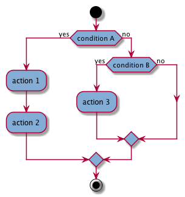
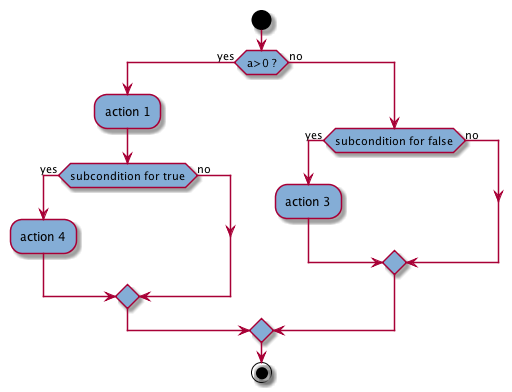

if-statement bifurcations in the flow are shown in the diagram when there are annotated actions inside. We can add user-defined conditions preceding the if- elseif- statements. We can also highlight the calls to functions/methods in the conditions [not implemented]. Finally, there are zooming options [not implemented].
//$ [condition A user-description]
if(conditionStatement A) { //$
//$ action 1
code
//$ action 2
code
}
//$ [condition B user-description]
else if(conditionStatement B) { //$
//$ action 3
code
}
else{
code
}
OPTIONAL:
//$: forces displaying in the diagram the calls to functions/methods inside the conditionStatement
//$ [condition user-description]: specifies a user-description of the condition; the square brackets [ ] are required syntax

Example with nested IF-Statements
using namespace std;
void activity_function(int a){
int c=2;
if(a>0) {
//$ action 1
cout<<"do 1"<< endl;
//$ [subcondition for true]
if (a>c)
{
//$ action 4
cout<<"do 4"<< endl;
} }
//$ [subcondition for false]
else if(a==-1) {
//$ action 3
cout<<"do 3"<< endl;
}
else {
cout<<"do nothing"<< endl;
}
return;
}
